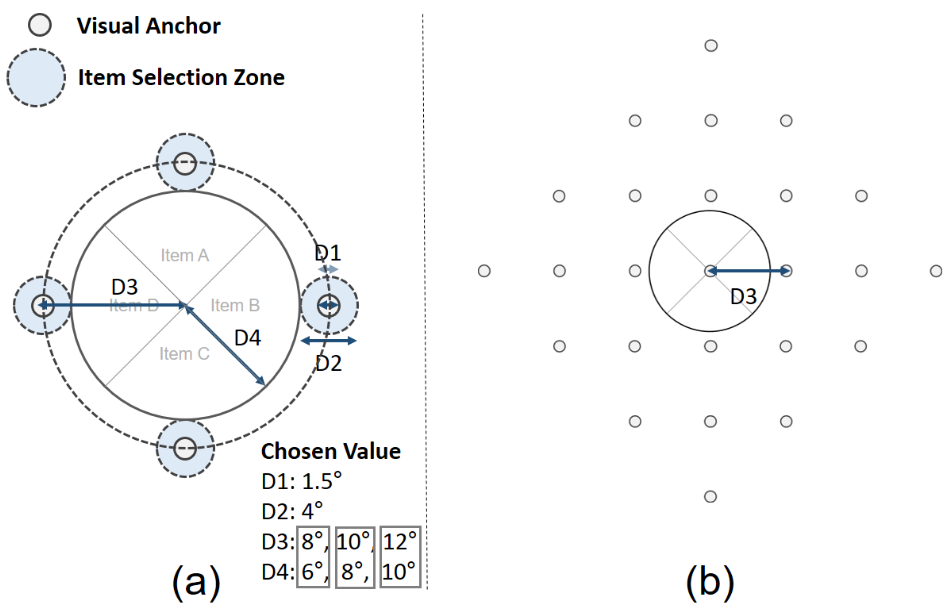
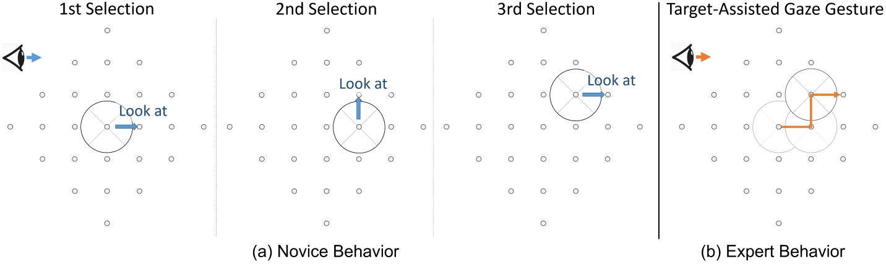
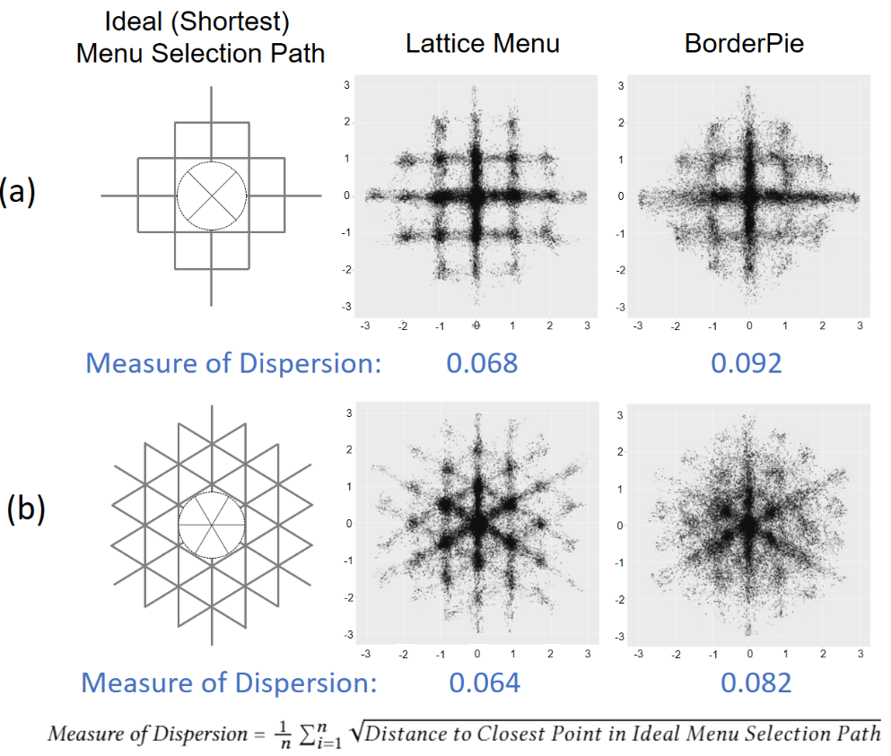

Taejun Kim, Auejin Ham, Sunggeun Ahn, Geehyuk Lee
(a) Lattice Menu parameters, (b) 4 x 4 x 4 Lattice Menu
Illustration of (a) novice user behavior and (b) expert user behavior of Lattice Menu
This work presents Lattice Menu, a gaze-based marking menu utilizing a lattice of visual anchors that helps accurate gaze pointing for menu item selection. It allows expert users to leverage target-assisted gaze gestures for multi-level item selection by looking at visual anchors over gaze trajectories. Our evaluation showed that Lattice Menu had a considerably low error rate (~1%) and quick menu selection time (1.5~1.8 s) for experts across various menu structures (4 × 4 × 4 and 6 × 6 × 6) and sizes (8, 10 and 12°). In a comparative user study, Lattice Menu exhibited remarkably (~5 times) fewer menu selection errors of experts than the traditional gaze-based marking menu that does not utilize visual targets. In a post-interview, all twelve subjects preferred Lattice Menu, and the majority of subjects (8 out of 12) commented that the provision of visual targets facilitated more stable menu selection with reduced eye fatigue
Menu layouts tested in the User Study
Lattice Menu is a gaze-based marking menu with a lattice of visual anchors that help precise gaze pointing. Users can select a menu item by looking at the corresponding visual target (i.e., visual anchor) outside the border of the pie slice. When the eye gaze enters the Item Selection Zone (Figure 2a) around the visual anchor, a corresponding menu item is immediately selected. Expert users, who already know the required trajectory to the desired item, can perform target-assisted gaze gestures by looking at the visual anchors on the gaze trajectories as depicted in Figure 3b. We evaluated the Lattice Menu design under a 3-level hierarchical menu structure, covering a sufficient number of commands (64 commands for 4 × 4 × 4, 216 commands for 6 × 6 × 6 menu structure).
Distribution of saccade landing position for (a) 4 x 4 x 4 and (b) 6 x 6 x 6 Structures (normalized scale, n ~= 300,000 for each plot) and calculated Measure of Dispersion with the illustration of ideal menu selection paths
The comparative evaluation showed Lattice Menu’s remarkably (~5 times) lower error rates compared to traditional gaze-based marking menu technique for expert use (i.e., Expert Trials). The scatter plot of the saccade landing position shows the effectiveness of Lattice Menu. The lattice of visual targets made users better follow the ideal paths for selection with low errors.